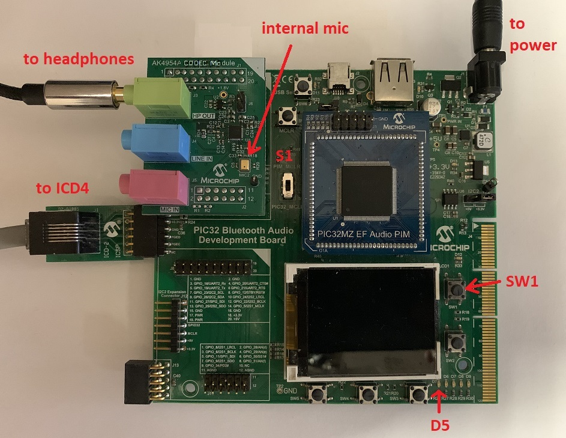
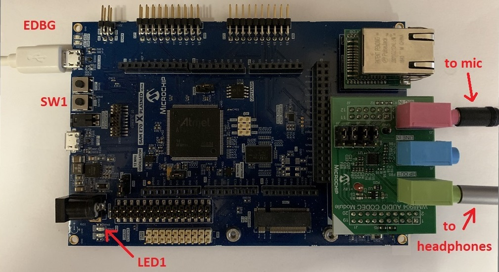

|
Important! |
Prior to using this demonstration, it is recommended to review the MPLAB Harmony 3 Release Notes for any known issues. |
Projects using a Pushbutton LED User interface:
Compile the program using MPLAB X, and program the target device using the EDBG interface (ICD4 for the project using the Bluetooth Audio Development Kit). While compiling, select the appropriate MPLAB X IDE project. Refer to Building the Application for details.
Four different delays can be generated. Tables 1-3 provides a summary of the button actions that can used to control the volume and delay amount.
- Connect headphones to the HP OUT jack of the AK4954 or WM8904 Audio Codec Daughter Board (see Figures 1-2), or the HEADPHONE jack of the SAM V71 Xplained Ultra board.
- If applicable, connect a microphone to the MIC IN jack of the WM8904 Audio Codec Daughter Board (see Figure 2), or the MICROPHONE jack of the SAM V71 Xplained Ultra board. (For the AK4954, the internal microphone contained on the daughterboard is used instead, see Figure 1.)
- The lowest-numbered pushbutton (SW0 or SW1) and LED are used as the user interface to control the program, as shown in Tables 1-3 below, depending on the board used. Initially the program will be in delay-setting mode (LED on) at a medium volume setting. Pressing the pushbutton with the LED on will cycle through four delay settings.
- Pressing the pushbutton longer than one second will change to volume-setting mode (LED off). Pressing the pushbutton with the LED off will cycle through four volume settings (including mute). There is never any delay when setting the volume.
- Pressing the pushbutton longer than one second again will switch back to delay-setting mode again (LED on).

Figure 1: AK4954 Audio Codec Daughter Board on Bluetooth Audio Development Kit with PIC32MZ EF Audio PIM

Figure 2: WM8904 Audio Codec Daughter Board on SAM E70 Xplained Ultra board
Table 1: Button Controls for Bluetooth Audio Development Kit
|
Control |
Description |
|
SW1 short press |
If LED D5 is off, SW1 cycles through four volume levels (one muted). If LED D5 is on, SW1 cycles through four delays: ¼ second, ½ second, 1 second and 1½ seconds. |
|
SW1 long press (> 1 second) |
Alternates between modes (LED D5 on or off). |
Table 2: Button Controls for SAM E54 Curiosity Ultra board and SAM E70 Xplained Ultra board
(On some E70 boards, SW0/LED0 are the lowest numbered pushbutton and LED, so use Table 3 instead.)
|
Control |
Description |
|
SW1 short press |
If LED1 if off, SW1 cycles through four volume levels (one muted). If LED1 is on, SW1 cycles through four delays: ¼ second, ½ second, 1 second and 1½ seconds. |
|
SW1 long press (> 1 second) |
Alternates between modes (LED1 on or off). |
Table 3: Button Controls for SAM V71 Xplained Ultra board
|
Control |
Description |
|
SW0 short press |
If LED0 if off, SW0 cycles through four volume levels (one muted). If LED0 is on, SW0 cycles through four delays: ¼ second, ½ second, 1 second and 1½ seconds. |
|
SW0 long press (> 1 second) |
Alternates between modes (LED0 on or off). |
Project using a Graphical User Interface:
Compile the program using MPLAB X, and program the target device using the EDBG interface. While compiling, select the appropriate MPLAB X IDE project. Refer to Building the Application for details.
- Connect headphones to the HP OUT jack of the WM8904 Audio Codec Daughter Board (see Figure 1).
- Connect a microphone to the MIC IN jack of the WM8904 Audio Codec Daughter Board (see Figure 1).
- Initially the program will be in delay-setting mode, with a 800 ms delay and a medium volume setting.
- The Delay can be adjusted from 10 ms to 1000 ms (1 second) using the center circular control.
- The Output Volume can be adjusted from 0% to 100% using the circular control on the right.
- The Microphone Gain can be adjusted from 0% to 100% using the slider on the left.
- Adjusting the microphone gain or output volume causes the delay to be temporarily disabled. Re-enable the previous value using the Enable Delay switch.
- The Enable Delay swtich can also be manually toggled at any time to disable the delay and provide immediate microphone loopback to the headphones.

|
MPLAB Harmony Audio Help
|